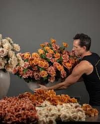
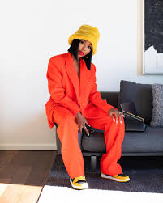
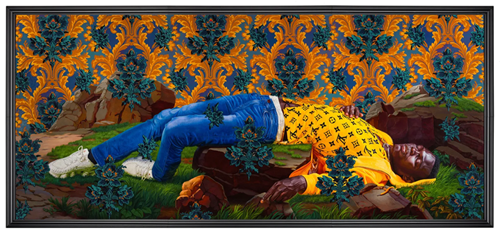

home
inspo
topfives
My name is Anesha Green
The artists I chose inspire me in their own unique ways, each telling a story that speaks to me in different ways.The obstacles we face are simply part of the journey, pushing me to persevere and follow my dreams. No matter what age, the sky is the limit
Jeff Leatham
jeff leatham

I love flowers to say the least and the way he creates his designs are amazing. I wish I could post more. I discovered him looking on instagram, working with the Kardashians as their floral designer. I kept wondering who's behind these masterpieces. I fell in love. I love how he goes out the box and his scale is grand. His simplicity with the colors and lines.
Kahlana Barfield Brown
kahlana barfield brown

Kahlana is very simple and I love black , white , earth tones , and bold colors. Whether it's a striped button up with some Nike dunks at work or a blazer with heels for sundry brunch with the girls , her style is my go to for inspiration. I love her oversized jeans and blazers with heels.
Kehinde Wiley
kehinde wiley

Wiley's ability to blend classical artistic techniques with modern themes and cultural references creates a unique and dynamic visual language. His vibrant portraits celebrate the diversity and individuality of people of color and even more beautiful in person as I show his showcase in 2023 at the DeYoung Museum.